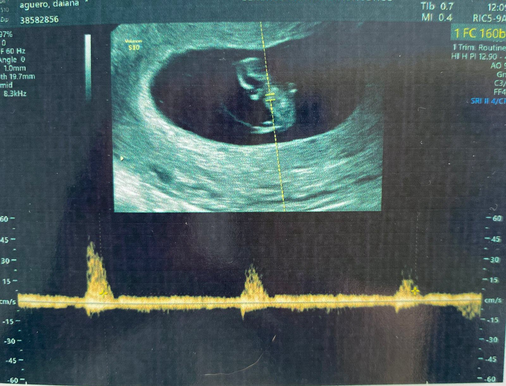

Comenzamos...
Yo fui la primera...

Lo bueno de ser la primera es que yo sola recibía todo el cariño. Nadie me molestaba.
Además, solo comía, dormía y ronroneaba sin que nadie me molestara.
Ah, me olvidaba... ¡Y llenaba todo de PELOS!
Lo bueno de ser la primera es que yo sola recibía todo el cariño. Nadie me molestaba.
Además, solo comía, dormía y ronroneaba sin que nadie me molestara.
Ah, me olvidaba... ¡Y llenaba todo de PELOS!
Sí, sí, en segundo lugar llegué yo.

Apenas podía caminar y tomar leche, ¡que por cierto me desesperaba por la leche!
Pero acá me tenés, encima me porto re bien.
Para quienes no me conocen, mis hobbies son: Dormir, comer, mañosear, subirme al sillón y pasarme horas dejando que el tío Chris me acaricie la pancita.
Por acá me soplan que además me gusta salir a pasear, pero... ¡nunca me sacan!
Sí, en tercer lugar llegué yo.

Si les dicen que me porto mal, ¡es mentira, no les crean!
Mis intereses son: Morder, rasguñar, saltar, molestar, etc...
¿Un nuevo integrante?
¡Hola FAMILIA!
Yo soy el cuarto/a.

....
....

Por ahora solo me dedico a dormir como mi hermana la pichita y hacer sentir descompuesta a mi mamá.
¡Escuchen mi corazoncito latir!